要想活到百岁，就必须掌握“一口气”的盛衰盈亏规律。
为什么给孩子补钙要慎重？为什么30岁以后最适合的运动是散步？为什么说老人晚上出去跑步违背天性？
眼角有鱼尾纹是胆气衰了，抬头纹是胃不好，额头竖皱纹多，是前列腺、膀胱有问题，嘴角多皱纹，严重胃病。
白发有两个原因：肾水不足，火太大。
为什么很多人能吃不长肉？为什么很多人减肥到最后是抑郁症？
经文：
黄帝曰：其气之盛衰，以至其死，可得闻乎？岐伯曰：人生十岁，五脏始定，血气已通，其气在下，故好走；二十岁，血气始盛，肌肉方长，故好趋；三十岁，五脏大定，肌肉坚固，血脉盛满，故好步；四十岁，五脏六腑十二经脉，皆大盛以平定，腠理始疏，荣华颓落，发颇斑白，平盛不摇，故好坐；五十岁，肝气始衰，肝叶始薄，胆汁始减，目始不明；六十岁，心气始衰，若忧悲，血气懈惰，故好卧；七十岁，脾气虚，皮肤枯；八十岁，肺气衰，魄离，故言善误；九十岁，肾气焦，四脏经脉空虚；百岁，五脏皆虚，神气皆去，形骸独居而终矣。
人活一口气
梁冬：为什么有些人一看就能够长寿呢？因为人长寿是有遗传的，有他肉体的物质基础。但是如果你母亲、父亲给你遗传的非常好，你却瞎造，照样折寿。这个“造”包括身体上的，还包括一些行为上的，比如做一些坏事什么的，也会折寿。
要想活到百岁，就必须掌握“一口气”的盛衰盈亏规律。
徐文兵：我们说，“三折肱成良医”，你断过三次骨头，慢慢吃药愈合，就知道什么叫医生了。但是你干吗非要折三次骨头呢？没必要嘛。学点养生的知识，防止自己的精、气、神的损伤，你就能尽其天年，或者是少折点寿，少打点折。
记住：做坏事也会折寿。
梁冬：对啊！“骨高肉满，百岁乃得终”。接下来是“黄帝曰：其气之盛衰，以至其死，可得闻乎？”什么意思？
徐文兵：这是古代的一个句式，如果老师说完以后黄帝要记笔记，就可以写“如是我闻”——我老师是这么说的。
树活一张皮，人活着就靠那口气，但是这个气的变化，它是有起伏，有盛衰的。
这段话其实是借着黄帝的口问 “人活一口气”这个问题。树活一张皮，人活着就靠那口气，但是这个气的变化，它是有起伏，有盛衰的。有他气足的时候，也有他气弱的时候，有他气充盈的时候，也有他泄气的时候。
气的变化有什么规律呢？黄帝问岐伯：您能不能把从生到死的这个阶段气的变化给我讲讲呢——“可得闻乎？”于是，岐伯就以十年作为一个阶段，把人生从十岁至百岁的活法，一段一段地慢慢讲给他听了。
人生从十岁至百岁的活法都在这里。
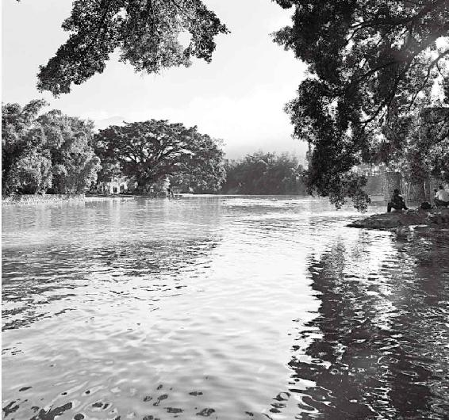
树活一张皮，人活一口气。
梁冬：为什么用十年作为一个阶段呢？
徐文兵：黄帝这会儿问的不是性生理的发展，而是贯穿人从生到死的这口气的变化规律。这个变化的阶段是简单地概括成十年来讲的。10岁左右的时候人会怎么样，20岁左右人又大体是个什么样。就是分成了十个阶段，我们可以作为参考。
半大小子吃死老子
梁冬： “岐伯曰：人生十岁，五脏始定，血气已通，其气在下，故好走。”请问“始定”是什么意思？
为什么给孩子补钙要慎重？
徐文兵：没完全定，还在长。小孩刚出生时囟门是开的，长大了以后慢慢才闭合，这叫定。囟门，通常指婴儿头顶骨未合缝的地方，在头顶的前部中央。
我之前见到几个小脸美女，头颅特别小。我问她们：“小时候，你妈是不是爱给你补钙？”她们说：“我很早就补钙了。”补钙是什么啊？头颅还没完全长到一定程度，它就给你封口了。
梁冬：母亲给孩子补钙不好吗?
徐文兵：这叫人为嘛。这跟给地里施化肥没什么区别，所以，补钙要慎重啊。
梁冬：“五脏始定”的意思是：在10岁之前，五个内脏都在长，它有没有一些规律性呢？
10岁前这个阶段，人气充血足，是纯阳之体，能吃，俗称 “半大小子吃死老子”。
徐文兵：这10年间，小孩子还处在发育的阶段，还没完全定型。比如说心脏，人心脏的大小大概就像自个儿的拳头。这时候，他的“拳头”还在长，人也在长个，而且气充血足，是纯阳之体，能吃能喝，就是老百姓说的“半大小子吃死老子”，这个阶段就叫 “五脏始定”。
怀念活蹦乱跳的岁月
徐文兵：10岁以前的小孩子是在父母的庇护下成长的，没有什么太多感情的创伤，也没有受到外界多大的伤害和刺激，所以，他身上不存在什么气血凝滞、瘀血、痰浊这些问题，他顶多就是平时着凉了、不消化了。他血气是通的。
10岁以前的孩子一般身上不存在什么气血凝滞、瘀血、痰浊这些问题，他顶多平时着凉了、不消化了。他血气是通的。
血气通，又处在阳气旺盛的时候，孩子表现出来的特点就是—— “其气在下，故好走。”在10岁左右或者说10到20岁这个阶段，不管男女，小孩子整天都是活蹦乱跳的，不知疲倦。
梁冬：比如商场里的电梯正在往下走，他却往上跑。我看见好多孩子就喜欢这样玩，因为气足啊——“气足在下，好走”。
徐文兵：我们现在说的“走”和古人说的“走”完全是两个概念。古代人说的“走”就是跑，说“走步”叫行，或者叫步，步行。现在好多人不知道这个区别，老把这个“走”当成走路。
现在说的“走”和古人说的“走”完全是两个概念。
梁冬：请您聊聊青春期发育的问题。
徐文兵：12岁时，我考上了山西大同二中，学校离我们家很远。为什么我去那里上学？因为那儿有位好老师叫冯更生，他是我的班主任，教语文的，年轻时是跑马拉松的运动员。他带了我六年。
为什么说老人晚上出去跑步违背天性？
我从初一进了学校后，整天早操就是跑。开始我不愿意，因为很累。但现在想起，在那个阶段让你跑是对的，是把孩童的天性发挥出来了。因为你气在下。如果到了七八十岁还让你跑，成了老头还这样锻炼，那叫违背自然！那时候，我每天早上步行半个小时来到学校后，在冯老师的带领下，就开始在操场上跑，跑七八圈，天天1500米。
10多岁的时候，让你跑是对的，是把孩童的天性发挥出来了。因为你气在下。如果到了七八十岁还让你跑，成了老头还这样锻炼，那叫违背自然！
梁冬：幸好我的班主任是做厨师的。
徐文兵：小孩子的特点是什么？白天欢蹦乱跳，到晚上八九点，一打蔫，入睡了。这是符合自然天性的——白天阳气旺盛，晚上休息。但现在不少人都爱晚上出去跑步。
梁冬：很多老子就是为了跟儿子跑，生生被儿子累倒的。
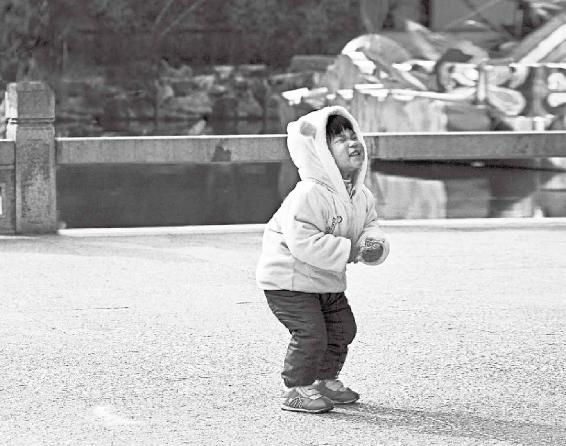
活蹦乱跳的岁月一去不复返，要好好珍爱，尽情让它释放。
正是练肌肉竞走的好时机
徐文兵：到了20岁或者从20岁开始到30岁这个阶段，人的血和气都达到了将近快盛满了，我们叫盛，盛满了。这个时候肌肉开始发达，开始长，他就从那种疾跑的阶段发展到了一种持久有力量的阶段，肌肉也开始变得丰满。“趋”什么意思？《说文解字》上有注解，它说快速地走步叫“趋”， 而快速地奔跑叫“走”。“趋”就是在行和走之间的一个状态，就是快步走。
快速地走步叫“趋”， 而快速地奔跑叫“走”。“趋”就是在行和走之间的一个状态，就是快步走。
梁冬：亦步亦趋。这古人活得真是优雅啊，他们对生活的观察，就连跑步快一点、慢一点都有不同的文字来做这种界定。
徐文兵：我小时候，邻居家有只鹅，那鹅看家护院的本领特别强。人一进院以后，它就夹起翅膀、伸长脖子来啄你，这动作古人就称之为“趋”。包括蛇，它蓄积力量来咬你的时候，那个动作也叫“趋”。它是稍微有点爆发力的、有点向前扑那种状态。
另外，从“走”比 “趋”要快的角度来讲，20岁以后，气已经是稍微下来一点了，已经不是“其气在下”了。他那些气长肌肉去了，往里面充盈去了。他不会向外面洒得更多，因而“故好趋”。
20岁到30岁这个阶段，应该好好练肌肉、练竞走。
所以，20岁以后练肌肉，练竞走运动比较好。
好好散步
徐文兵：女子到了28岁，男子到了32岁，都达到了生理高峰。这在《上古天真论》里讲了——“肌肉满壮”，横着了。这里的30岁，它没从性生理、性心理的发展角度来看，而是站在正常生理、男女不分的角度，说这是人发展的一个高峰——五脏大定。
梁冬：这个大定是大概定了呢，还是什么？
徐文兵：完全定了。
梁冬：一般来说，谈婚论嫁，应该男的比女的大两三岁吧？
徐文兵：影响谈婚论嫁的因素很多，不可一概而定。女子21岁以后出嫁，男人24岁以后娶亲，这样好一点。五脏已经定了，你藏了多少精，这时已经不可改变了。这个时候， “肌肉坚固”，有力量，气血也最旺盛——“血脉盛满”，时不时熬夜、加班加点没事。但过了这个年龄段，有事了。
女子21岁以后出嫁，男人24岁以后娶亲，这样好一点。
梁冬：突然有一天，你发现你打麻将熬不住了。这时，就要看看自己这把岁数了。
徐文兵：说到“故好步”，什么叫“步”？ “步”就是比 “趋”再慢一点点，踱步嘛，胜似闲庭信步。
为什么大步走的锻炼方法不适合中老年人？
安步当“车（jū）”，安步当“车（chē）”，这个走步也有讲究。大步，我们叫阔步，还有小碎步……走得不一样，步幅不一样，节奏就不一样。步幅是个“率”，走得有多快，是心率决定的，是它在指挥，它调的也是个节奏。我看到在公园里真正练功的人，他的呼吸吐纳是配合走步“吸吸呼”的，一边迈步一边“吸吸呼”，而且心思特别集中，特别放松。
从“走”也就是“跑”，到“趋”，然后到“步”的过程，好像是速度下来了，但是另外一方面——“心智”发达了，气往上走了。
到什么山唱什么歌，30岁以后，最适合人的运动是散步，散步时不要加大步幅和走路的频率。
说到这个“步”呢，大家尤其要注意一个事情。曾经有人提倡一个锻炼方法——“大步走”，告诉中老年人：“你们想要自己的心脏强健吗？那就大步走。”结果，好多人来找我看病，练出了什么问题？心慌、心跳、睡不着觉。30岁可以快步、大步幅地走。30岁以后，你就该踱步了。散步时慢慢走，不要加大步幅，也不要加大走路的频率。到什么山唱什么歌，是什么年龄就做什么样的运动。
现在很多人锻炼都是盲目的，我们说30多岁的人你不要去跑了，可好多70后说：“哎呀,老坐办公室，我要去锻炼。”干吗去？打羽毛球、打乒乓球，冬天外面那么冷也得去。
好多人就是坚持——“我要运动”。我说，你们都在动不在运，胡闹！
好多人都在坚持运动，但实际上都是盲目运动，都在动不在运，都是瞎动！
梁冬：还有一些人呢，冬天早上的时候开始在长街上跑啊跑，吸点汽车尾气，说重点儿叫“人肉吸尘器”，那真是很危险的事情！
40岁后人要注意什么
徐文兵：40岁以后，人的“五脏六腑十二经脉，皆大盛以平定”，身体达到了一个极点，也开始走下坡路了。表现是 “腠理始疏”。腠理我讲过，就是皮肤的纹理和细胞间那个肉眼看不到的间隙。当人在身体好、气足的时候，腠理特别紧密，好像是一个充满了气的皮球，上面不会有任何皱纹。
但40岁以后呢，腠理就开始疏松了。女性表现在，“我的眼角出现鱼尾纹了，我皮肤的毛孔变得粗大了”，还有人容易感冒。肉松了嘛，外部肉体的防线和气的防线退化了。以前穿得单薄点儿出去没事，现在稍微不注意就感冒，腠理疏松了。
梁冬：不同的人的纹路、皱纹是不一样的，通常眼角出现了鱼尾纹意味着什么？男的额头上有皱纹呢？
徐文兵：眼角有鱼尾纹是人的胆气衰了；抬头纹重是胃不好；额头竖皱纹多，前列腺、膀胱有问题；嘴角皱纹多，严重胃病。脸上的皱纹啊，拉皮可以遮盖。女人唯一遮盖不住的，是脖子上的皱纹，就是气血上不去。好多老美女都戴着围巾，遮掩一下脖子上的皱纹。“腠理始疏”了。
眼角有鱼尾纹是人的胆气衰了；抬头纹重是胃不好；额头竖皱纹多，前列腺、膀胱有问题；嘴角皱纹多，严重胃病。
梁冬：“腠理始疏”后“荣华颓落”，“荣”和“华”分别指什么呢？
徐文兵：什么叫“荣”？我们想想白居易的“一岁一枯荣”，想想枯，就知道什么叫“荣”了，“荣”是被滋润的那个状态，返青返绿了，这是指树木。
对人来说，气血滋润的样子叫“荣”，“你看他荣光焕发的”。“华”是什么？是花开的那个模样，闻着香，有颜色，有光泽。中医经常说，“心，其华在面。”意思是如果心的功能不错，那表现出来的脸色就很好看，气色也好。另外，“肾，其华在发”，是说一个人肾好的话，那她肯定一头乌发。这叫有华。
心的功能不错，那表现出来的脸色就很好看，气色也好。一个人肾好的话，那她肯定一头乌发。
人到中年，“荣华颓落”，什么表现？脸色变得不润泽、枯槁，白发开始多起来了，甚至有些人出现脱发。
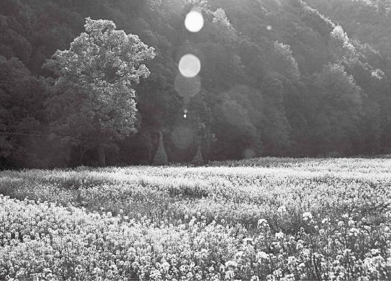
人的身体有时与植物类似，植物养分充足才会有颜色有光泽，人内外健康，自然容光焕发。
防治白发的最根本之法
梁冬：有些人很早就有白头发，这意味着什么？
徐文兵：白发有两个原因：第一是肾水不足，再一个是火太大。年轻时候长白发都是因为体内火太大，有创造力。
白发有两个原因：第一是肾水不足，再一个是火太大。
梁冬：我发现一个特点：不少年轻、有花白头发的人通常脾气暴躁，很容易发火。
徐文兵：心气很高！
梁冬：我曾经见过一些人，年纪到了一定程度的时候，他的眉毛会长出很长的几根，有人说这是长寿的标志。中医怎么看待这个问题？
徐文兵：气血足的话，人的眉毛就浓，就长。如果一个人阳气旺，我们就说他立眉霸眼，很有决断力。
气血足的话，人的眉毛就浓，就长。
我给人调治身体，就调他的五脏六腑，这人原来一脸的焦黑晦暗，调完以后会出现一个现象：开始变白。哪儿先变白呢？眉毛底下的部位开始变白，然后扩散到全脸。好多人治到最后，病好了，我说，“你不用来了”，他说：“不不不，我还要脸白，我还要白一白。”
人的脸色，其实是内脏功能的一个表现。你老在脸上涂涂抹抹、敲敲打打做文章，有人戏称为装修。我说那属于治标不治本。
气色不错，实际上是五脏六腑不错。
如果你把五脏六腑调好了，荣华自然就显露在脸上。我们说，这人气色不错，哪儿不错？五脏六腑不错。而人到40岁以后，就会出现“腠理始疏，荣华颓落”的状态。
《上古天真论》里也说过：女子过了五七三十五岁以后，“阳明脉衰，面始焦，发始堕”。再过7年，“面皆焦，发始白”，脸色整个就变得焦黑干燥，没有荣光，这些表现都是与人的年龄对应的。
梁冬：怎么样才能够延缓一点点呢？
徐文兵：出现这种情况的原因，《黄帝内经》说了， “阳明脉衰”。阳明脉，第一指足阳明胃，要想阳明脉不衰，你就要把你的胃保护好；第二指手阳明大肠，要想保持大肠化腐朽为神奇和化完腐朽、正常排出的能力，你就要好好侍候好自己的大肠。总之，把阳明脉照顾好了，你的脸色就不再难看，而且也不会便秘了。
养肾精是防治白发的最根本之法，平常挠一挠头也有一些作用。
女人开始衰老，为什么第一道皱纹出现在眼角——胆经的瞳子髎穴位置？男人为什么会两鬓斑白？像苏东坡说的“早生华发”。问题都出在胆上。因为胆经的循行部位就在我们身体的两侧，沿着阴面和阳面的交界，我们管它叫少阳。
把阳明脉照顾好了，你的脸色就不再难看。
还有，肾是水，胆是木，水生木。肾水稍微弱一点，第一表现就是木开始枯槁，人的两鬓开始发白，然后蔓延到全头。所以，养肾精是防治白发的最根本之法，平常挠一挠头也有一些作用。但如果底下（肾）不给供水，你把头挠破了，它还是白的。
如果脸颊出现暗疮、黑斑、黑点，就可能是胃病。还有很多人，嘴巴周围长了一圈暗疮，那是冲脉有问题。一看女孩子嘴巴下面长了这种暗疮，那她可能有妇科病，得研究白带。
女人开始衰老，为什么第一道皱纹出现在眼角——胆经的瞳子髎穴位置？男人为什么会两鬓斑白？像苏东坡说的“早生华发”。问题都出在胆上。
发鬓斑白还有一个重要原因，就是这个年龄的人，已经混到了“争权夺势，争名逐利，费尽心机”的阶段，这时人的心火、心思用得特别旺，这种心火又折过去煎熬、消耗肾水，这也会导致发鬓斑白。古时候，伍子胥就是这样，过昭关时，一夜之间就白了头。
40多岁的人，已经混到了“争权夺势，争名逐利，费尽心机”的阶段，这时人的心火、心思用得特别旺，这种心火又折过去煎熬、消耗肾水，这是促成发鬓斑白的又一个重要原因。
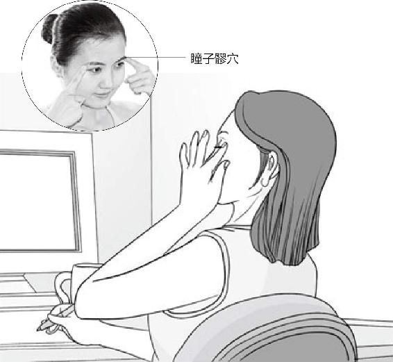
岁月无常，皱纹会慢慢爬上您光洁的眼角，
幸好，还有“瞳子髎”为您遮风挡雨。
我接触过不少这样的人。一位母亲听到自己儿子突然出车祸去世后，一夜白头。为什么一夜白头？就是那煎熬自己的心火把肾水一下熬干了。
还有，我治过一些上网成瘾的年轻人，他们简直就失神了，爹妈怎么管教也没用。孩子在家里偷钱，在外面借钱，小偷小摸，随后就上网吧，把父母亲煎熬得全是一头白发。所以，发鬓斑白的原因，从生理上说是肝胆气不足了，气血不足了，但心理上的煎熬其实影响更大。
发鬓斑白的原因，从生理上说是肝胆气不足了，气血不足了，但心理上的煎熬其实影响更大。
梁冬：很多时候，情志对我们身体的影响是非常大的，但我发现，不少人对情绪的影响力认识不足。
不少人对情绪的影响力认识不足。
徐文兵：认识不足的原因，不是说大家没意识到，而是对此没抓没挠的。物质上有形有质有象的东西，像吃什么吃坏了，我可以去研究它，把原因弄明白。但情绪呢？看不见，摸不着。很多人说：“我气坏了，你气死我了，你伤我心了……”或者“我悲了，我哀了……”这情绪具体是什么？抓不着。但是，中医却抓得着！
中医有一套理论，专门研究你什么病容易产生什么样的情绪，比如肝火旺的人，愤和怒的情绪就容易大，心气不足的人就容易悲和哀。这种无形的情绪，它是有一个肉身和能量基础的，还有一种表现方式。所以中医是能抓住、落实的，就是说，中医能把情绪这种无形无象的东西落到实处，而且有一系列调整它的好办法。
肝火旺的人，愤和怒的情绪就容易大，心气不足的人就容易悲和哀。
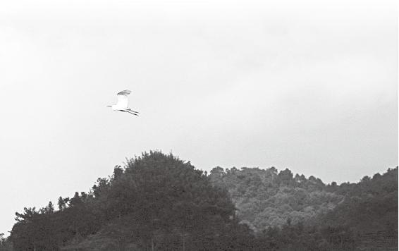
争权夺势、争名夺利、费尽心机，常常煎熬的是自己的肾水，是自己的身体。聪明有时常被聪明误。
40岁后该练静坐
梁冬：接下来是“平盛不摇，故好坐”。请问什么叫“平盛不摇”？
徐文兵：“平盛”是相对 “五脏六腑皆大盛以平定”的。 “平盛”以后，人的精血不会再增加了，而是在慢慢地减少，人不那么喜欢跑，不再喜欢跳，也不怎么喜欢大步走路了。因为流往脚上的气血不足，所以就喜欢坐了。
梁冬：我发现有些人坐着的时候，很喜欢颤脚，颤颤颤，这说明什么？
颤脚的原因是什么？是一口气，推动这口气的就是一种躁动不安的心情。这都是心火和肝火。
徐文兵：说明一个人手足无措。颤脚的原因是什么？是一口气，推动这口气的就是一种躁动不安的心情。这都是心火和肝火。什么叫“好坐”？这么坐舒服。我们说人什么年龄练静坐？40岁以后。
梁冬：我现在30多岁就练打坐，是不是早了点儿？
徐文兵：有点儿早，这个年龄最好去练站桩。另外，我建议家长和老师不要逼一个小孩子在好走的年龄去练站桩和静坐，这是不合适的，绝对是摧残人家孩子。
为什么小孩子不要练站桩和静坐？
所以人到40岁以后，去学学静坐吧，既符合你的生理，又符合你的心理。静坐以后，就可以降降自己的虚火、浮火。
梁冬：有一个观点，说静坐的时候，你把双腿一盘，有助于拉开骨骼。因为经脉是从脚下下去的。
徐文兵：关于静坐的理论太多了，各门流派，怎么单盘、双盘。我有次回老家，碰到一个高人，人家说：“你们都知道两掌合十，怎么不知道脚掌也应该合十？”人家那个门派的做法就是：两个脚心也要对着。反正，坐法就是各种各样。
人到中年，气血不在脚上了，去学学静坐吧，既符合你的生理，又符合你的心理。学会静坐后，莫名的虚火、浮火都降下来了。
我的意思是，如果你的肌肉没那么柔软，肌腱不是那么有弹性的话，不要非强迫自己去盘成个什么样，舒服就行了。道家就很简单，道法自然，舒服为原则，没必要搞得自己那么扭曲变形，弄得自己不痛快。我建议，中年人一定要找个好老师去学学静坐。
梁冬：痔疮和坐的时间长有关系吗？
痔疮跟肝有关。
徐文兵：没关系，痔疮跟肝有关。好吃辣椒的人容易得痔疮，喝酒的人也容易得，就是说湿气、瘀血重的人容易得痔疮。其实痔疮就是一个瘀血块，或者瘀血凸起的一条静脉的一个腔道、管道。
梁冬：中医是怎么调治痔疮的呢？
要想增强自己的魄力，就要老做“提肛“运动。
徐文兵：身体上有个地方叫魄门——肛门！古代人受刑以后，医生去救死扶伤，第一件事就是塞住魄门，怕那股气走了。而我们要想增强自己的魄力，就要老做一个提肛运动，也就是撮谷道，有意识地把肛门的括约肌收紧了放松、收紧了放松。这是预防痔疮最好的方法。
预防痔疮最好的方法是撮谷道。
人衰老首先从肝上表现出来
梁冬：到了50岁，“肝气始衰，肝叶始薄，胆汁始减，目始不明” ，很多问题就开始来了。
徐文兵：人到50岁叫半百。在《上古天真论》里，黄帝说，我发现，现在年过半百的人，“动作皆衰者。”
大致看一下，50岁是肝功能衰弱，60岁呢？
梁冬：木生火，60岁是心开始衰弱。
徐文兵：70岁呢？
梁冬：火生土，脾胃开始衰弱了。
徐文兵：80岁呢？
梁冬：土生金，肺开始衰弱了。
徐文兵： 90岁呢？
梁冬：金生水，肾有问题了。
徐文兵：人的肝、心、脾、肺、肾是有讲究的，哪个脏先衰呢？木！就是“肝气先衰”。
人的肝、心、脾、肺、肾是有讲究的，哪个脏先衰呢？木！就是“肝气先衰”。
其实，这是一个轮回。前面我们讲了，人衰退的根源在于自身的精气不足。首先从水生的那个木——肝先表现出来。木是春天，最早开始出现问题——“肝气始衰，肝叶始薄。”
梁冬：什么叫“肝叶”？
徐文兵：人的肝有三片叶，精血足的时候，肝叶特别厚；如果精血不足？肝叶就变薄了。肝又是分泌胆汁的器官，肝叶薄了以后，就好像母亲没奶了，胆汁也不充盈了。胆汁不充盈，化肉的功能就差了，跟着一系列问题就来了。
梁冬：胆不是用来分泌胆汁的，而是用来装胆汁的。
胆不是用来分泌胆汁的，而是用来装胆汁的。
徐文兵：装进肝分泌的胆汁以后，如果身体需要，胆就再把胆汁放出去。
梁冬：做了胆囊切除手术的人，会有什么样的结果呢？
徐文兵：没做手术前，他的身体有代偿性。没吃肉时，他有一管胆汁存在那。吃肉以后，胆汁“啪”放出去化解。切完胆后就没这个缓冲了，人就不能一顿吃很多肉，只能胆分泌多少，他用多少。
《上古天真论》讲过，女子到了49岁的时候，月经没了，肝不藏血了。没那么多血可藏，也没那么多血可放了。好像水库蓄水，都没蓄上水，放什么水？到这会儿，女人的月经没了，闭经了。而男人到50岁，性功能就差了。
男人到50岁，性功能就差了。
梁冬：我听说有一些人月经停了之后，后来不知道怎么回事又回来了，这有可能吗？
徐文兵：有！那是接着漏。该闭经的时候你不闭经，还见红，这就是问题。到14岁（虚岁）了，该来例假你没来，也是问题。中医的道理是什么？到了什么年龄，该干什么你就干，干错了就不对。
中医的道理是什么？到了什么年龄，该干什么你就干，干错了就不对。
好多人说有月经好，没月经就不好。那得看什么时候。七八十岁又见红了，一检查，有癌症。到那会儿你见了红，就是很可怕的事情。
梁冬： “胆汁始减”，就是说人50岁的时候，胆汁就基本上不分泌了？
徐文兵：应该是减少了。像梁山好汉，大碗喝酒、大块吃肉，但到50多岁这个阶段，消化油腻的功能也差了。
梁冬：所以，老年人别吃太好，实际上他也吃不了太好。现在，有很多子女孝敬父母，燕窝、熊掌堆着，其实真的是害了父母！
50多岁这个阶段，人消化油腻的功能就差了，性功能也差了，眼睛开始看不清楚东西，眼花了，这时，一定要注意补肝护胆。
徐文兵： “为人子女者，不知医为不孝”。虽然他们发自内心，本心是孝，但结果是害老人。所以，人到了五十来岁，吃五谷杂粮就可以了，大油大腻的东西不大合适了，因为胆汁不够用了。
“肝开窍于目”，到50多岁，人还会出现什么问题？“目始不明。”眼睛开始看不清楚东西，眼花了。
人到了50来岁，吃五谷杂粮就可以了，大油大腻的东西不大合适了，因为胆汁不够用了。
梁冬：眼睛看得见，是后面的气血充足，而且得冲到肝上。
徐文兵：冲到肝开的“窍”—— “眼睛”上。
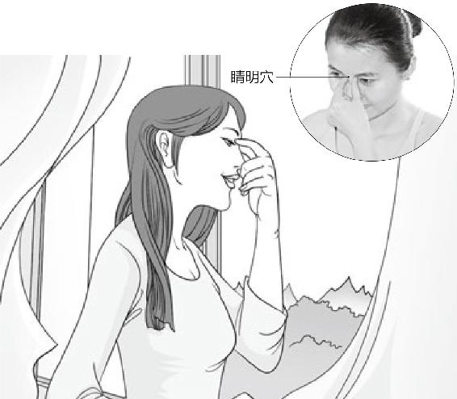
要想明眸善睐，轻揉睛明小穴。
梁冬：人老珠黄的这个“珠黄”，就是指眼睛黄喽？
徐文兵：到这会儿就黄了。还可能的情况就是他白眼球上出现了很多黄斑或者是黑斑。
怎么样才能够保肝呢？第一要养肾；第二，子时丑时是肝胆的工作时间，你那会儿沉睡就在养肝。
梁冬：这是什么原因呢？
徐文兵：瘀血。除了虚以外，还有外邪了。
梁冬：那一个人怎么样才能够保肝呢？
徐文兵：肝的妈妈是肾。第一，要养肾；第二，子时丑时是肝胆的工作时间，你那会儿沉睡就在养肝。你看人沉睡的时候，眼珠子在动，就好像我们把一个元宵晃匀了一样。干吗在动？眼球动就是看身体哪缺血，看哪缺气，看哪缺精，人自己在调呢。你干脆就不沉睡，眼珠就死鱼眼一样僵硬着在那儿看，你眼不花才怪。
梁冬：眼睛转的时候是沉睡啊！
人在深度睡眠、有梦的时候，眼珠就在转。
徐文兵：对呀，人在深度睡眠、有梦的时候，眼珠就在转。
眼珠子滴溜溜乱转，健康！一看这人两眼发直，不是神经病，就是精神病。
梁冬：哦，没看过。
徐文兵：眼珠子滴溜溜乱转，健康！一看这人两眼发直，不是神经病，就是精神病，眼睛开始不明了——“目始不明”了。
梁冬：有些人眼袋很重，这是什么原因？
祛除眼袋重在治胃。
徐文兵：祛除眼袋重在治胃。目下属胃，目侧属胆，目的内眦属膀胱，我们说眼睛底下有卧蚕一样一个大眼袋——胃病；眼角外侧纹路特别深或者黑斑特别多——胆病；中间——膀胱病。
眼角外侧纹路特别深或者黑斑特别多——胆病；中间——膀胱病。
梁冬：早上起来眼屎很多说明什么呢？
徐文兵：这是肝胆有火，有湿热。还有人眼屎多得让眼睛睁不开，得拿水冲。
梁冬：眼屎太多，原因是湿热。看来，对眼屎这么平常的事情，它里面都深含道理。
眼屎太多，原因是湿热。
徐文兵：50岁后，有人就问：“我眼睛不明（目始不明），怎么办？”我说：“很好调治，有一个穴位，专门就是让眼睛亮的。”中医很有意思，给你讲了病理，接着就有对应的治疗方法。什么穴位可以让眼睛亮起来呢？睛明穴！
其实，围着眼睛的穴都可以！但是请记住，这些穴都是在末梢上，要想眼睛明亮，你得从根儿上调。它根儿上怎么说的呢？肝气虚了，然后“胆汁始减，肝叶始薄”。所以，眼睛花了，要从肝胆上入手调治。特别是这个胆，对眼睛影响非常大。
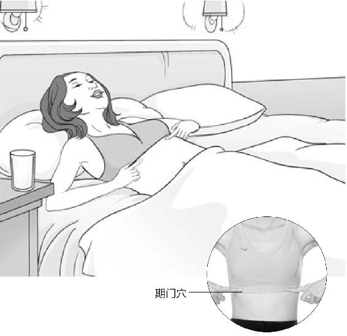
打开“期门”，眼睛一亮，身体喜洋洋。消化不好也可以找它哦！
你如果想眼睛亮，就去找胆气聚集的一个地方，它是胆的一个募穴，你给它做点按摩。它在我们的第七和第八肋骨中间。沿着乳头往下数，一般乳头在第四、第五肋间，你往下数俩肋骨，募穴就在肋骨缝儿这儿。你觉得老花眼了，看近东西不清楚了，就揉揉它。这个穴叫期门，是肝的募穴。如果你说:“哎呀！这个定位太复杂了，我搞不清楚。”那很简单，你把两只手搓热了，就在这个肋叉子这儿揉，搓开了以后，就能促进胆汁的生成和分泌。很多人消化不好，一揉完这儿，肚子咕噜咕噜响，舒服了。
眼睛花了，要从肝胆上入手调治。特别是这个胆，对眼睛影响非常大。
人衰退的根源是自身的精气不足，要想眼睛明亮，得从根上调，从肝胆入手调治⋯⋯世间万事都要寻其根源，才能真正处理好。
60岁以后要警惕“退休综合征”
梁冬：人到了60岁的时候应该怎么样呢？话说：“六十岁，心气始衰，苦忧悲，血气懈惰，故好卧。” 60岁的人就喜欢躺着了。常言道：好吃不过饺子，舒服不如躺着。
徐文兵：男人和女人到了60岁左右，会出现一个什么样的现象？退休综合征。
退休对老人身心是有影响的。我有一个在老干部处的朋友，他的工作就是照顾那些老人。他发现很多人60岁退休以后，就开始发病，不少人去世的年龄，就在60～64岁之间。
梁冬：作为一位中医，你怎么解读这个现象呢？
徐文兵：他的生理和社会环境发生剧烈的变化以后，心态没有及时地跟上。
梁冬：“心气始衰”，就是一下子气血不足了。
心气很高的人就喜欢折腾点事。心气衰的人是什么表现？没意思！出去玩没劲。买一大房子没劲。装修一下，随便你们装成什么样都行。这就是心气衰了。
徐文兵：气血不足是个大概念，具体到五脏六腑， 50岁是肝气始衰，胆汁也减少了，肝叶也变薄了，“目始不明”，看东西眼花了。另外，按五行来讲，肝属于木，木生的是火——心嘛。60岁以后，先是木头不是那么足了，接着是火不旺了，也就是说，肝气衰退以后，下一个衰退的就是心气。
我们平常说，“这个人心气很高”，心气很高的人就喜欢折腾点事。心气衰的人是什么表现？没意思！出去玩没劲，买一大房子没劲，装修一下、随便你们装成什么样都行。这就是心气衰了。
拒绝“杞人忧天”的活法
徐文兵：“心气衰”的人有什么表现？首先，他的情绪上会出现一些剧烈的变化。按《天年》的话来说，这些人会莫名地“忧”和“悲”，“若忧悲”。
“心气衰”的人会莫名地“忧”和“悲”。
梁冬：“忧”和“悲”有什么不一样？
徐文兵：“忧”和“悲”完全不一样。繁体字的“憂”，上面是一页书、两页书的“页”字，其实它念“屑”，指的是头，中间有个“心”。有句成语叫“杞人忧天”，就是老是担心将来有个不好的事发生，这叫“忧”。天崩，地坠，什么天上星星掉下来，地震什么的。“忧”就是说一个人老处于对将来的一种不安感觉中。
“忧”就是说一个人老处于对将来的一种不安感觉中。
2004年，我跟我爸说：“我挣点钱，咱们这个房贷可能提前还。”当时我爸说什么？“你要挣那么多钱，你还要交好多税。”他首先想到的是交税的事，不看你挣的总比交的多，他看到的就是一种负面的东西。
梁冬：这是“忧”。“悲”怎么解呢？
徐文兵： “悲”上面是个“非”，在甲骨文里面，它是两只小鸟相背而飞，劳燕分飞，是一种分离的状态，是人在分离、分别的时候产生的那种情感、情绪。我们经常说“悲欢离合”，什么意思？合就是“欢”。离呢？就是“悲”。
我们经常说“悲欢离合”，什么意思？合就是“欢”。离呢？就是“悲”。
梁冬：真是长学问了。我随口那么一问，那么有东西。
徐文兵：中国人是把对人的情感、情绪的认识都研究到骨子里了，就落实到一个汉字上。
中国人是把对人的情感、情绪的认识都研究到骨子里了，就落实到一个汉字上。
梁冬：我觉得，现代人活得真是粗糙！
徐文兵：我们现在活得特糙，粗、鄙、浅、薄、糙！正常人到了秋天，看到落叶纷纷，草木凋零分离的那种肃杀状态，都会感叹秋悲。而很多老年人是一年四季，不管春夏秋冬，都会产生一种悲。
特别是现在，有很多空巢老人。爹妈单独居住，我们在外面奔忙，又不常回家看看，所以老年人悲的心理就更加严重。生理上他们已经到了这个阶段了，然后，你为人子女又不懂孝，不会伺候父母，所以老人这种忧和悲的状态总是缠绵不去。
多抱抱父母，多让他们吃一些补心气的食物。和父母走在一起的时候，一定要搀着他们，这样的肌肤之亲能延他们的寿。
做儿女的一定要常回家看看。另外，要经常抱抱父母，跟父母一定要有这种亲昵的接触。经常有这种气的交流的话，能弥补老人衰弱的心气，让他那种悲的感觉少一点儿。
梁冬：和父母走在一起的时候，一定要搀着他们，这样的肌肤之亲能延他们的寿。实际上，我们到处寻求福分，殊不知，父母健康才是子女最大的福分。
我们到处寻求福分，殊不知，父母健康才是子女最大的福分。
徐文兵：现在，很多子女老送什么金、什么脑、什么保健品给老人，其实还不如回家多抱抱他们，甚至让父母碰碰你也好，什么都比不上亲人之间的肌肤之亲重要。
我以前有个同事，他说他最开心的事就是让他爸帮他剪头发，虽然剪得很难看，但他爸帮他剪头发的时候会特别开心。如果有一天他自己在外面剪了头发的话，他父亲会非常难过。
什么都比不上亲人之间的肌肤之亲重要。
老人做什么都不要用力过猛
梁冬：“若忧悲”之后是“血气懈惰”。“懈”和 “惰”有什么不同？
徐文兵：“懈”把竖心旁去掉就是“解”，解开了。它的反义词是“凝聚”。
“懈”是一松，松掉了，我们说提不起劲，提不起气了。这是一种表现，说明他的气有点散。
我们应该在父母家里床头和厕所里贴上一个“慢”字，提醒老人家突然站起来会很危险。
气聚不到一块，身体没有弹性，这人就满脸的皱纹。说这人鸡皮鹤发，鹤发是头发白了，鸡皮是松松垮垮的样子。
“惰”是往下坠，往下坠的表现是什么呢？比如一个人血压很低，突然起立，或者起床稍微猛一点，他就会眼前发黑，甚至会晕倒。有的老年人在走路或者干活的时候，突然“哗”一下倒地下了。他倒不是一下过去了，他就是气血上不来，这种情况叫血气“惰”了。而气血凝聚不到一块儿，叫 “懈”了。
梁冬：我们应该在父母家里的厕所里写一个“慢”字，提醒老人家突然站起来会很危险。
侧卧对老人最好
徐文兵： “血气懈惰”就是针对 “若忧悲”的。
“若忧悲”讲的是60岁老人的心理情绪状态。“血气懈惰”涉及到他们的生理特点。古人讲话都是有深刻道理，也是有顺序的。综合这种心理和生理特点，老人平时的形态表现是什么？ “故好卧”——就喜欢躺着。
“若忧悲”讲的是60岁老人的心理情绪状态。“血气懈惰”涉及到他们的生理特点。
梁冬：平躺是一种躺，侧躺也是一种躺，这在文字里面有没有什么不同？
徐文兵：正确的睡觉姿势应该叫“卧如弓”，是侧卧，这是一种比较好的睡姿。我调治过一个小孩子，他是消化不良，老是手心发烫。他老趴着睡，觉得枕头底下那块儿凉。
梁冬：为什么人要“卧如弓”？
徐文兵：我理解的“卧如弓”是这么个意思：人的胆经是行走在身体两侧的，侧卧，尤其是右侧卧，对胆经正好有一种压力。好多人睡不着觉，中医管这叫“不得卧”。《黄帝内经》包括《伤寒论》都没有说什么睡不着或者失眠，就说“不得卧”，意思是入睡困难，或者是反复醒来，或者老是做那种奇奇怪怪的梦，也就是说卧不安。中医还有一句话，叫“胃不和则卧不安”。
人的胆经是行走在身体两侧的，侧卧对胆经正好有一种压力。
卧不安是什么意思？一个就是我说的趴着睡，人才有安全感。而侧卧对胆经正好有一种压力，所以胆气弱或者胆寒的人侧着就会容易睡着。有一个治疗失眠的、很著名的方子就叫“温胆汤”。为什么人有不安全感？害怕嘛！为什么害怕？胆寒。那你把他的胆给弄热了，或者给它压力了，他就不害怕了，他就睡着了。
“温胆汤”是治疗失眠的著名方子。
梁冬：侧着睡比较好一些。
徐文兵：对，尤其是要右侧卧。
梁冬：为什么我现在睡觉的时候喜欢平躺着，像小孩子一样把握着的拳头整个摊开呢？这样不好吗？
徐文兵：这说明你还停留在童稚期。当然，这样睡也可以。小孩子睡觉都是两只手扬起来，心经是打开的。
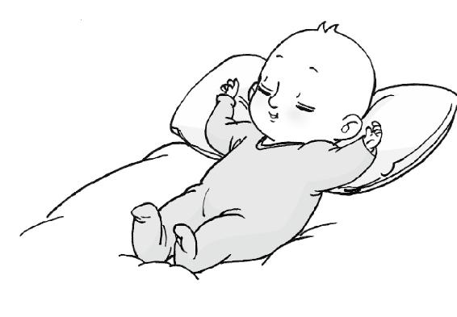
小孩子睡觉都是两只手扬起来，而老人睡觉应该右侧卧。
另外，侧卧还有一个对人体有益的原因是什么呢？我们脖子和肩膀有一个距离，如果一个枕头的高度与它相等，就正好有一个力的支撑，这时候，你的脖子放在上面是非常放松的。所以睡觉的话最好侧卧。另外，枕头一定要硬，如果你不喜欢太硬，又不喜欢太软，就用荞麦皮枕头。
其实，那么多人有颈椎病，就是这个软枕头闹的。
古人睡觉的枕头就非常硬，有瓷枕什么的，而现在人睡的都是鸭绒枕那种软枕头。想想看，枕头是软的，头部缺乏一个力量支撑，脖子就是硬的了。所以，那么多人有颈椎病，就是这个软枕头闹的，“不得卧”。
人老了，气血本来就不足，回缩到身躯内了，腿脚也有点儿不灵便，你还强迫他把气血往手脚上运动。好多人就这样把自己给锻炼坏了。
梁冬：“故好卧”怎么讲？
徐文兵：“故好卧”是针对我们小时候“好走”，然后“好趋”，然后“好步”之后的一个老年生理阶段来讲的。随着人年龄的增大，气血的变化有一个下降的趋势。总的来说，既然生理变化到了这个时候，人就要顺应它的节奏。
现在一些养生节目，乱说什么“为了锻炼心脏，你岁数大了也要去运动，要大步走，要跑步”。人老了，气血本来就不足，回缩到身躯内了，腿脚也有点儿不灵便，你还强迫他把气血往手脚上运动。好多人就这样把自己给锻炼坏了。
梁冬：这样的锻炼方式就是活活地把本来可以滋养心脏的气血，生生弄到远东地区，当然对心脏不好了。所以，你得经常让老年人躺一躺，这样休息比较好。
徐文兵：年轻人回家后，别看爹妈在那儿躺着你就不高兴，非要拽起来让他去锻炼，这是很蠢的。
年轻人回家后，别看爹妈在那儿躺着你就不高兴，非要拽起来让他去锻炼，这是很蠢的。
父母年过60以后，你该怎么去对待他们？首先，你要意识到他们看问题容易看负面，容易悲观，容易替孩子们操这心、操那心，这是他们的生理特点决定的。另外，他们懒得活动了，平常爱早晨起来出去遛遛弯，回来又躺下了，这是正常的表现，你要尊重他们。还有，要在饮食和别的一些保健方面帮助爹妈，要有针对性。比如说心气虚的父母，吃点什么能补他们的心气？
父母年过60后，看问题容易看负面，容易悲观，喜欢替孩子们操这心、操那心，这是他们的生理特点决定的。他们懒得活动了，经常出去遛遛弯，回来又躺下了，这是正常的表现，你要尊重他们。
补心气的东西，一般颜色都偏红。像很多活血化瘀，能促进心脏血液循环的中药都是红色的，比如丹参、茜草、红花、赤芍，甚至朱砂；还有一个叫肉苁蓉的药，补益心气也非常好。
另外，中医把补心气最好的东西叫做血肉有情之品。什么是血肉有情之品？红肉！现在有一种观点说要给老年人吃白肉，别吃红肉。实际上，红烧肉老年人吃最好。
红烧肉老年人吃最好。
梁冬：传说中的红葡萄酒是有道理的。
徐文兵：几千年来，经过实践，最适合中国人体质的酒并不是红葡萄酒。是黄酒！我们看一个东西好不好，得看它的材质。红酒是葡萄酿的！葡萄是果还是实？是果，果是果肉。而黄酒拿什么酿的？种子，是胚胎！种子是实嘛。它是由有生命力、能够再繁殖出生命的东西酿成的。所以种子属于生命的早期，果子就是生命的晚期。
最适合中国人体质的酒并不是红葡萄酒。是黄酒！
黄酒主要是入肝经的。温了以后喝，肝经强了，木生火，也能补益心气。另外，补益心气的最好粮食是红高粱，现代人都不吃了。
梁冬：调治老人的“若忧悲”，最好用什么药？
调治老人的“若忧悲”，最好用什么药？
徐文兵：悲是因为离。什么才能欢？合嘛。中药里面有两味药：合欢花、合欢皮，专门调治这种忧悲的病。古时有一首诗里说：“合欢蠲（juān）忿，萱草忘忧。”萱草，就是我们平常吃的金针菜（又名黄花菜），只要在饮食或者吃的药里边加上合欢、金针这两味药，老人悲的情绪就能缓解。
只要在饮食或者吃的药里边加上合欢、金针这两味药，老人悲的情绪就能缓解。
梁冬：百合病是什么意思啊？
徐文兵：百合病相当于现在的焦虑或者躁狂症。说这个人坐又不能坐，卧又不能卧，就是那种坐立不安、烦躁不宁的症状。然后你问他怎么了，他也不知道，就在那儿莫名其妙地自己哭泣。怎么调治？就熬百合一味药给他喝。
梁冬：所谓悲欢离合，离就是悲，合就会欢。
还有，老年人六七十岁了，合一合是不是对身体有好处呢？
徐文兵：因人而异。我们讲过，男人到64岁留着那点儿精气养自己就够了，不要往外放。
梁冬：老人怎么知道自己是不是适合呢？
徐文兵：看他自己，但我是反对的。有些人到这把年龄还去吃一些壮阳或者催情的药，最后把自己透支过度。
梁冬：你觉得老年人应该分床睡还是合床睡？
老人应该分床睡，包括年轻夫妻都应该分床睡。“服药千裹，不如独卧。”
徐文兵：老人应该分床睡，包括年轻夫妻都应该分床睡。“服药千裹，不如独卧。”听说过这句话吗？就是说，你吃这个补那个，养得再好，不如分床而睡，节省你的精气神好好养自己。老夫老妻分开睡，不见得就是感情不和，而合在一起，反而可能闹得身体更不好。
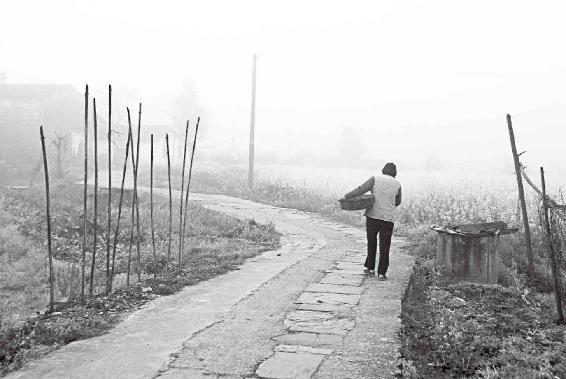
人老了，气血本就不足，因而看问题容易悲观，容易替孩子操这心、操那心，这是由生理特点决定的。作为子女，不要不耐烦，要尊重他们、珍爱他们。
老年人特别要好好补脾
梁冬：人到了70岁，《黄帝内经》就用了六个字来形容，“脾气虚，皮肤枯” 。
徐文兵：到七十岁就该土不足了，对应的就是脾气虚。这个脾你看它怎么写？
梁冬：一个“月”，一个“卑”，卑下的“卑”。
徐文兵：为什么卑？我们经常说“善用人者为之下”。海纳百川，为什么海能纳百川？位置卑嘛。所以脾这个东西其实是容纳、吸收、包容所有营养物质和藏污纳垢的地方。好比你在外边挣了钱，回家要交给老婆一样。阳性的器官是腑，它在消和化食物。消和化后的东西交给谁呢？脾。脾是个脏，是个阴，阴是专管吸纳、吸收的。
吃了喝了不长肉，那是脾出问题了。脾气虚是什么意思？就是脾吸收的功能变差了。所以，即使你吃了很多有营养的东西，你也吸收不了。
现在很多人说什么脾胃不和、肝脾不和，错了！他们根本没搞清楚脾是干吗的。比如，吃了喝了不长肉，那是脾出问题了。脾气虚是什么意思？就是脾吸收的功能变差了。所以，即使你吃了很多有营养的东西，你也吸收不了。
梁冬：“脾气”和“脾”之间有关系吗？
脾是主管人一生的，它是人的后天之本。当人的习性定格以后，就叫脾气，脾气是固定不变的。
徐文兵：有关系。有人肝火很旺，还有人脾气很大，俩人有区别吗？实际上，脾气好的人突然间也会有肝火爆发。但是我们没说这人脾气不好，为什么？脾是主管人一生的，它是人的后天之本。当人的习性定格以后，就叫脾气，脾气是固定不变的。
有人说：“人之初，性本善；性相近，习相远。”当一个人的习性还没有固定下来，我们说他还没定型。定型了以后，我们就说这人形成了自己的一种思维方式、情绪方式、情感表达方式，这叫有脾气了。
脾胃消化和吸收功能不好的的两个表现：
第一，要跑，要离开这儿。第二是拼命进食，储存能量，以备将来不测之需。
很多人脾胃消化和吸收功能不好的时候，有两个表现：
第一，要跑，要离开这儿。“走走走，我们要离开这儿。”很多有抑郁症的人，就有这个特点，他们就要走，表现出很惊恐的眼神。问他要去哪儿？他们说不知道，扭头就要跑，就是逃离现场。
这就是脾胃虚闹的。
脾胃虚的人有一种营养摄入不够的感觉，老觉得，“将来要有不好的事发生”。你给他吃饱了，就没事了。陷入这种感觉的时候，脾胃虚的人就不停地吃。
有一些白领频繁跳槽，很可能不是人品问题，是脾胃虚导致的不安全感。
梁冬： 化食量为胆量嘛！
徐文兵：这是一种动物本能。动物碰到危险的时候，第一就是逃；第二是拼命进食，储存能量，以备将来不测之需。
这就是我们说“脾气”和“脾”气表现在外的那种思想情感，其实它是有物质、生理功能作为基础的。
梁冬：有一些白领频繁跳槽，很可能不是人品问题，是脾胃虚导致的不安全感。
关于脾，您还有什么跟大家分享的呢？
徐文兵：有一句话叫“胃强脾弱”，说这人特能吃，但不长肉，吃的东西全拉掉了。
为什么不少人能吃不长肉？
梁冬：不少人都哭着、喊着要有这种功能。
徐文兵： 很多人现在追求的是一种病态，说你这么能吃还不长肉，真羡慕你。我们老家有句话叫“男人是个耙耙，女人是个匣匣，不怕耙耙没齿子，就怕匣匣没底子”。意思是男人像一个搂钱的耙子，出去耕耘，去搂回东西。往哪儿装啊？往那匣匣里面装嘛！这个男人再无能、再笨，他总能搂点东西回来；就怕什么？匣匣没底子，老婆盛不住。你挣多少钱交给她，全给你造光。也就是说，胃是耙耙，吃进去东西；脾是装东西的匣匣。不怕胃不好，就怕脾气虚。
上面一句话的意思就是说，能挣的不如会花的，她能给你全存上，可以应不时之需。这样的话，人就很健康。
能挣的不如会花的，她能给你全存上，可以应不时之需。这样的话，人就很健康。
说到这，有个 “廉颇老矣，尚能饭否” 的故事给大家讲一讲。战国时期，赵国和秦国要打仗了，赵国朝中无可用之将，去访问一下老将军廉颇吧。怎么考察？去看看廉颇还能不能吃饭。结果来人一见廉颇，海量，特能吃。回来怎么汇报的？吃倒是能吃，一吃饭，三遗矢，就是吃饭中间廉颇上了三趟厕所。能吃吧？
梁冬：的确能吃啊！
徐文兵：胃没问题吧？
梁冬： 没问题。
徐文兵： 哪有问题了？
梁冬： 匣匣（脾），兜不住，吸收不了。
廉颇就是“胃强脾弱”，吃了就拉了，所以最后赵王还是没用他。
徐文兵：廉颇就是“胃强脾弱”，吃了就拉了，所以最后赵王还是没用他。
70岁这个阶段会出现什么问题？一个是不能吃，饭量少；第二，吸收也不好。还会出现一种情况，吃倒是挺能吃，但是吃完了就拉。总之，脾气虚了。
梁冬：有一些减肥药就鼓吹：你吃了，全拉出来，不忌口不长胖。其实这是对脾很大的伤害。
有一些减肥药就鼓吹：你吃了，全拉出来，不忌口不长胖。其实这是对脾很大的伤害。
徐文兵： 这是对生理上最大的伤害。别说老年人，年轻人也受不了。
老年人要少生气，忌辛辣
徐文兵：脾气虚了以后，皮肤的表现是什么？
梁冬： 皮肤枯嘛，没有脂肪在皮肤上堆积。
徐文兵：一个是皮枯，一个是肤枯。肤是皮下脂肪，当脾吸收进来营养后，化为气，化为神，让你吃饱了能干活，能写东西；另外呢，多余的能量转化成脂肪，变成一个精髓的半成品，储存在体内。一是保护你臟腑的温度，另外是储存在皮下脂肪，给整个身体保温。脾气虚的人有一个特点：有皮无肤，他那个皮，你一拎就能拎起来。
脾气虚的人有一个特点：有皮无肤，他那个皮，你一拎就能拎起来。
梁冬： 有些老年人真的是这样。
徐文兵：什么叫鸡皮鹤发？一拎有皮无肤，皮下没脂肪了。现在，好多人一说到减肥就是“我要抽脂”，抽什么呢？把脾好不容易吸收的东西（匣匣好不容易攒的钱）给捅开个洞抽走了。抽到最后，有的人感觉弱不禁风；还有的人觉得脏开始寒，心寒齿冷，就觉得活着没意思。据统计，好多抽脂减肥的人到最后都患上了抑郁症。
为什么好多抽脂减肥的人到最后都是抑郁症？
梁冬：太恐怖了！
徐文兵：这都是人造疾病。
梁冬：怎么才能补脾？
徐文兵： 中医经常说一个词叫“健脾”。什么叫健脾？就是让脾气“使之有力”，或者叫“使之有气”。就是怎么能提高脾的消化功能？首先，我们别干蠢事，就是说别干让脾气变得很弱的事情。什么是伤脾气的事？什么克土？
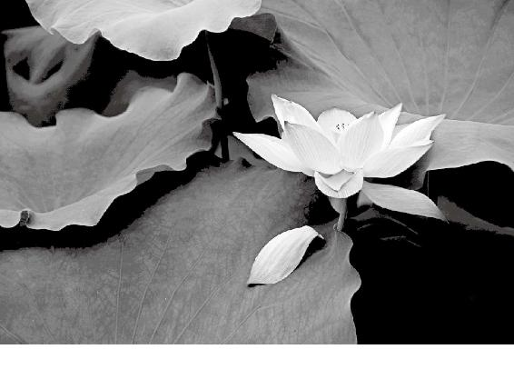
有的女孩想减肥又对食物没有意志力，采用的方法是抽脂和抠喉。这种做法无异于饮鸩止渴，伤害远远大于得到，非常的愚蠢。
梁冬：木克土。
徐文兵：所以你发现了没有，好多脾气虚的人一生气就拉肚子。跟人吵完架以后，马上上厕所。肝气一动，脾气就弱。这种人最忌讳吃过于辛辣的东西，特别是老年人。
好多脾气虚的人一生气就拉肚子。跟人吵完架以后，马上上厕所。肝气一动，脾气就弱。这种人最忌讳吃过于辛辣的东西，特别是老年人。
平常，我们吃的东西太多了，没胃口，堵在嗓子眼了，吃点辣的东西，好！又开胃了。因为辛辣的东西能把肝气、胆气鼓舞起来，把那些多余的营养化掉，你又能吃了。而当你脾气虚的时候，吃辣的东西会让你一下子把营养耗散掉。所以，老年人到这个年龄要忌辛辣。
老年人要忌辛辣。
请问“吸收”的反义词是什么？
梁冬： 呕吐。
徐文兵： 呕吐和拉肚子——泄泻最伤人的脾气。现在减肥的人一个是抽脂，还有一个是抠喉。这顿饭既想吃，吃完又怕长胖，怎么办？先吃，吃完跑厕所一弄，哗哗吐掉了。这种方式最伤脾胃之气，弄到最后就是厌食症。
养脾胃的食物或者药有哪些？
这种吐先伤的是脾胃之气，然后伤的是心气，最后连吃饭的欲望都没了。所以，老年人切忌用那种催吐或者是拉肚子的方法，有可能拉下以后就收不住了。
梁冬： 怎么养脾胃之气？
徐文兵：第一，不要干蠢事，不要剧烈地催吐或者拉肚子。另外，要学会借天地之气去养自己的脾胃。借春天调肝气起来，借夏天鼓舞心气，借秋天养肺气，借冬天养肾气，尤其要注意换季的时候。因为中医把每一季的最后18天归到脾，比如春天的末尾，快到立夏前的那18天，借这个气养脾胃。到这会儿呢，天地之气会鼓舞你的脾胃，所以，要多吃一些养脾胃的食物或者药。
梁冬：养脾胃的食物或者药有哪些？
糖尿病是脾气太旺。
徐文兵：效果好，颜色黄的，像小米粥。小米，我们叫粟。另外，中药里面有很多黄色的药，补脾非常好。像党参，黄土高原出产的。上党地区，山西晋中南——长治出产的这个党参最好了，什么味道？甜的。还有我们古代用的饴糖——高粱饴。老年人在这个年龄段还要吃点蜜，他们脾气虚了。
梁冬：这些东西都是甘甜的东西，有糖尿病的老年人怎么办？
徐文兵： 糖尿病是特例。糖尿病是什么？脾气太旺，克了肾水。而脾气虚是自个还不行呢，克什么肾呢？它克不了。
中药甘草也是补脾气的，黄色，味甜！其实，补脾气最好的一味药是山西北面——我们老家附近浑源县出产的，叫黄芪，黄色，甜的，煲汤、煮药都非常好。它的作用就是补脾胃、长肌肉、托脓，托里透脓。
老年人切忌用那种催吐或者是拉肚子的方法。
脾气虚的人还有一个表现是什么？身体划破了，或者长了痈疮，久久不愈合。现代医学解释说这是免疫力低下什么的。原来这儿溃烂，流的都是那种稀汤寡水，但你吃完黄芪以后很快开始化脓、出脓，脓排干净以后伤口愈合。黄芪这味药到了70岁这个年龄段是应该作为一种食材来用的。
脾气虚的人还有一个表现是什么？身体划破了，或者长了痈疮，久久不愈合。
如果老年人还能吃点肉的话，什么鸡肉、鸭肉、猪肉都不适合，补脾最好的肉就是牛肉，而且最好是黄牛肉。吃黄牛肉炖的汤，里面再加点黄芪，然后吃一碗小米粥或者干饭。粥不是稀粥，而是稠的，做的时候就像焖大米一样把小米焖好了，再用勺子把它杵得粘烂，浇点牛肉汤汁一吃。
如果老年人还能吃点肉的话，什么鸡肉、鸭肉、猪肉都不适合，补脾最好的肉就是牛肉，而且最好是黄牛肉。
梁冬： 你有没有观察到我刚才吞了一下口水？说明我身体反应还可以。
徐文兵：说明我的语言功能也很强，把人给说饱了。
梁冬：老年人不要吃什么？
徐文兵：不要吃辛辣的。
梁冬：脾气虚的人还要注意哪些？
脾气虚的人还要注意哪些？
徐文兵：脾气虚的人，尤其注意不要过度劳作。因为脾气虚了以后，不但影响不了外面，还缩到里面。缩到里边的表现是什么——皮肤枯。皮肤枯的原因是什么？气上不去了。
我给大家推荐两味补脾气的成药。它是经过几千年验证的：第一个叫补中益气丸，第二味药药店也能买到。它专门调治外面一有风吹草动就得感冒的人。这药叫玉屏风散。
梁冬：好像气球，气不足就瘪了。
徐文兵： 人的气瘪了，皱纹出来了，皮肤也枯了，一拎就起来了。所以，脾气虚的人一是不要多动，另外赶紧吃一些中药，把脾气给补上去。这里，我给大家推荐两味成药。
一般没辨证，我是不给人推荐什么药的，但有一些药呢，它是经过几千年验证的，是基本上对路、不会有太大副作用的药，大家可以去尝试一下。
第一个叫补中益气丸。为什么叫丸呢？散和丸的区别就是里边有个赋形剂。这种赋形剂，我们都用小米的那种精糊，就是小米熬得特别稠特别稠，然后晒干了，把它打成淀粉，把这些药给它裹在一块儿。一个丸里边大概有一半是淀粉，另一半是药，又做成小丸。为什么？我知道你很弱，本来功能很差，突然给你送来一顿好饭，你受得了吗？做成小丸就是要让它慢慢地被你吸收。
梁冬： 第二味药呢？
徐文兵： 第二味药药店也能买到。它专门调治外面一有风吹草动就得感冒的人，这药叫玉屏风散。
梁冬：听名字就知道它的作用，屏风嘛！
徐文兵：对，把那些外邪之气屏蔽掉。
而且，这里面用的四味药，君药是黄芪——山西晋北的黄芪最好，叫北芪，也称箭芪。里面的臣药叫防风，你听这名字，多形象。还有一味佐药是苍术或者白术。最后还有一味药——甘草。它们合在一块想达到什么效果呢？把你的脾气补起来、提起来，让你的卫气变得充盈。这样你就不容易遭到外邪的侵袭。
还有，老年人到七十岁以后，有句话叫：七十不留宿，八十不留饭。为什么这么说？
七十不留宿，八十不留饭。
梁冬：不小心就过去了。
徐文兵：这种状态下你再让他有点儿风吹草动，得个感冒，很容易就一病不起。“上工治未病”，与其那样，不如好好把它防住。玉屏风散就是给身体建立一道屏风的。
梁冬：我还以为防住就是别留饭、别留宿，原来是这样的。
老了不犯糊涂
梁冬：“八十岁，肺气衰，魄离，故言善误。”什么是肺气衰？
什么叫“耄耋之年”？七十岁以上叫耄，八十岁以上叫耋。
徐文兵：古人有一句形容老年人的话—— “耄耋之年”。“耄”是一个“老”，底下一个“毛”。“耋”是一个“老”，一个“至”。七十岁以上叫耄，八十岁以上叫耋。我们说脾是土，土生什么？
梁冬：土生金嘛！
徐文兵：八十岁以后，老人的肺气开始弱了——“肺气衰”，有什么表现呢？
一个是喘，一个是哮。喘呢就是呼吸节奏加快了,气不够用了。我们说气沉丹田，如果人肺气很足，一口气儿就能吸到丹田，厉害的一口气可以吸到脚后跟。但是老人肺气虚了以后就开始出现浅表呼吸。
人肺气很足，一口气儿就能吸到丹田，厉害的一口气可以吸到脚后跟。但是老人肺气虚了以后就开始出现浅表呼吸。
还有，肺本身的力量不够气的吸入、排出，人就要依靠肢体的力量，于是他呼吸时就会张口抬肩。肺气虚的老人甚至不能平卧，只有半卧，靠着高枕头，半坐半躺地这么过一夜。
肺有一个功能——帮助人的肾做水液运化，就好像风箱一样，气进来后推动体液，输布到全身。如果肺气进不来呢？全身的微循环系统就差了，动力下降以后，带来的就是一系列身心的变化。
梁冬：为什么黄帝要把人生分成10年一个阶段来看，从10岁左右开始，一直看到60岁、70岁、80岁……其实是让你拥有一个生命的整体观，大概知道自己应该有一个怎样的活法。
为什么肺气衰的时候就会“魄离”？
为什么肺气衰的时候就会“魄离”？
徐文兵：《黄帝内经》说人长寿的原因是“故能形与神俱，而尽终其天年，度百岁乃去”。到了80岁这会儿，你形不行了，好比你盖了个宾馆，但没把你的客人伺候好，这时候人家当然就要离开。
肺是藏魄的。关于魄，我们以前讲过有七个，其中一个管呼吸功能的比较重要，叫“臭(chòu)肺”或者“臭(xiù)肺”。肺气衰了， “臭肺”就容易离开。它离开你的身体后，呼吸功能就不好了。
另外就是老说一些错话，“故言善误”，或者自己的一些亲人，他都辨认不清楚了。我们说这人老糊涂了。老糊涂的原因是什么？最浅表的是魄离，然后到死，叫魂离，最后是神去，人没了。
老糊涂的原因是什么？最浅表的是魄离，然后到死，叫魂离，最后是神去，人没了。
所以，肺气衰的老年人呼吸有问题了，说话也老是词不达意了。比如有时说出“那个卖女孩的小火柴”“掀起你的头盖骨”什么的。
梁冬：有些人平常这样说，我们觉得很好笑，其实是因为他的肺气弱。
徐文兵：肺气弱以后有一个什么问题？脑萎缩！我刚才说了，肺要推动津液向全身输布。另外，肺是肾的妈妈，金生水。你肺气弱了，没力气推动体液输布，制造新的精髓（脑髓也是人体的精）功能弱了，这脑子当然就不够用了。
梁冬：怎么才能让肺的功能强大起来，延缓衰老呢？
徐文兵：补益肺气，多吃白色的食物，吃白米饭、白色的生山药，还有贝母。贝母有两种，一种小的，出产在四川的叫川贝。为什么叫贝母呢？它是两个摞在一块儿，好像妈妈背个孩子一样,就是母子，就是袋鼠抱着孩子那个样儿，很好玩。
“不犯糊涂”的秘诀：补肺气。方法是撮谷道和多吃白色的食物。比如大米饭、生山药、山茱萸、蛤蚧、贝母（川贝、浙贝）等等。
梁冬：植物也是有灵性的啊！
徐文兵：贝母，浙江出产的比较大，大贝母叫浙贝，或者叫象贝。它是补肺气非常好的药。
民国有位名医叫张锡纯。他特别善于给人补肺气，他用一味药——山茱萸。山茱萸是酸味儿的，酸主收敛，肺主纳气，都是往里收的，所以吃酸的东西，是能够纳肺气的。
补肺气的动物药，蛤蚧不错。药店里有一个四脚给钉住，长得像壁虎一样，然后有个小尾巴的东西就是蛤蚧。
梁冬：蛤蚧最精华的地方在哪里呢？
徐文兵：在它尾巴上。药店里有种药叫蛤蚧定喘丸，就是用蛤蚧为主药的。
另外，魄要跑从哪儿跑？魄门——肛门。怎么办呢？ 把肛门收紧了，那个魄就跑不了。肛门与大肠相连接，大肠与肺相表里。所以，这是一个补肺气的好方法，非常简单，还不花钱。
老年人到80岁以后，内裤老是会不干净。他那个肛门就收不紧，括约肌无力，排便或者是不排便时老会流出点东西来。经常锻炼肛门的括约肌，我们叫撮谷道，魄就不会跑掉。
中国古代皇帝，短命的占绝大多数，但清朝却有两个长寿的皇帝，一位是乾隆，一位是乾隆他爷爷——康熙。康熙活了将近70岁，乾隆活了86岁，那算是很高寿了。乾隆总结自己长寿的秘诀，其中一个就是撮谷道。
梁冬：生活真的是处处皆学问呢！
乾隆的长寿秘诀就是撮谷道。
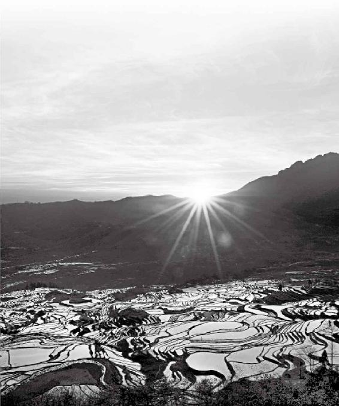
人老了，自然身体各方面都会出问题，要想出的问题少一点，就要在年轻的时候，甚至更早的时候就打好基础。养生要趁早。
补肾就是把根留住
梁冬：“九十岁，肾气焦，四脏经脉空虚。”什么意思？前面讲到金生水，所以90岁肯定是肾出问题了。
徐文兵：90岁已差不多到了肾精枯竭的时候。肾是个水脏——水的脏，当肾精干了以后，它就焦了，也就是精髓快耗干了。
肾是把多余的精储存在其他4个脏里面的，当人老了，首先从肝开始虚，然后是心、脾、肺开始虚，一系列地虚。最后到了肾，就虚到根儿上了。
当人老了，首先从肝开始虚，然后是心、脾、肺开始虚，一系列地虚。最后到了肾，就虚到根儿上了。、
梁冬：虚到根儿上会出现哪些问题呢？
徐文兵：没有精了，化成不了血也化成不了气了。血是走在脉里面，气是走在经络里面的，所以岐伯说“经脉空虚”。
梁冬：肾和膀胱是什么关系？
徐文兵：肾是在里面藏着的，是脏；膀胱是对外开放的，是腑。它们是一个表里的关系。如果人受了寒气，先伤膀胱，然后就过渡到伤肾。
如果人受了寒，先伤膀胱，接着就伤肾。要想伤肾，敬请受寒吧。
梁冬：一说到“肾气焦，四脏经脉空虚”,很多人就想到要补肾。中医是怎么补肾的呢？
徐文兵：一个是补肾，一个是益肾。
梁冬：这两个东西有什么不同？
徐文兵：补肾就是别让它漏。比如到这岁数了，虚了是正常的。但有些人是提前把自个儿的精给漏掉了，这种人需要补。
梁冬：我们怎么知道自己的肾在漏精呢？
徐文兵：漏精有表现啊。比如，体液都是我们的精。遗精算漏，白带多算漏，人工流产算漏，动不动就出汗算漏。现在，很多人说我要出去出点汗，出什么汗？那叫漏精。还有出血、呕吐、拉肚子，这都会伤肾，这都是漏精。
体液都是我们的精。遗精、白带多、人工流产、动不动就出汗等都算漏精。
梁冬：有些人撒尿的时候有很多泡沫，就跟啤酒倒在马桶里一样，但化验又没事儿。这是什么呢？
徐文兵：中医认为，这叫漏精。
梁冬：那怎么样能够把这个精补住？
徐文兵：补啊！什么叫补？就是不让它漏。补是止损，益是往里面加东西。
什么叫补？就是不让它漏精。补是止损，先得补，后再益。
否则这儿漏着、那儿加着，等于白补。
梁冬：先得补，后再益。
徐文兵：先得把锅补住了，然后再往里加东西，否则你这儿漏着，那儿加着，等于白补。
梁冬：既然肾是主黑色的，那要补的话就要用像黏土一样的东西，比如黑色的、稠稠的东西。
徐文兵：比如熟地黄。地黄叫地髓，骨髓的“髓”。它的鲜品叫生地黄。生地黄偏于凉血，是寒性的，但把它炮制(蒸、晒)以后，它里面的多糖就变成了单糖，黑色，然后就变成了熟地黄。熟地黄补肾、益髓的功能特别好。
补肾的良药有哪些？
梁冬：有些人打电话想说两件事，说完第一件，第二件事忘了。这种情况需要用熟地黄吗？
徐文兵：不一定，有的人是心火太旺、事太多，他也会忘事。还有，头天要是熬夜了，也要补肾。另外，益肾的东西还有玄参。玄参是黑色的，它的功效也非常好。另外，丹参、白参、红参、黑参，还有黄参——党参。颜色不一样，都叫参。云南的三七，也叫参，三七参。这都是老天爷造好给大家用的。
梁冬：除了吃什么来补益肾外，还有别的方法可以在日常生活中帮助到我们的肾吗？比如，等公共汽车或者是坐着看电视的时候。
徐文兵：撒尿的时候要咬牙，这是防止肾气漏掉的一个非常好的方法。
撒尿的时候要咬牙，这是防止肾气漏掉的一个非常好的方法。
我见过的一些长寿老人，他们习惯早晨起来先叩齿，然后鸣天鼓，就是用掌心捂住耳朵，手指敲后脑勺。因为肾开窍于耳，这其实就是用后天的意识引导人先天的神气去关注某个东西。还有就是搓耳朵，左手绕过头顶从耳垂往上捋右耳，你别左手直接搓左耳。右手也一样。因为它是个胎儿，头朝下的。这些都是日常生活中非常好的补肾方法。
另外，一些胶类的东西，像胎盘、冬虫夏草，还有杜仲、续断、土鳖虫，都是非常好的补肾药。
搓耳朵，是左手绕过头顶从耳垂往上捋右耳，你别左手直接搓左耳。右手也一样。
梁冬：请问这个紫河车——胎盘，到底该怎么弄？比如刚生了小孩子之后的女性。
徐文兵：跟医生要过来。
有一次，我厚朴一期的一个学生生完孩子后，就把它交给了我们，我们有个制剂室可以加工。冬至那天，我们给它烘干，然后磨成粉，装胶囊给她拿回家吃了。
修身好了，连死都是快乐的事
徐文兵：人到百岁，最理想的境界就是“善终”。“百岁，五脏皆虚，神气皆去，形骸独居而终矣。”要知道，人能活100岁，那简直就是老天的恩典。但是，普通人从50岁开始，各个脏分别丧失精气，出现症状，到百岁时，五脏基本上都空虚了。
人到百岁，最理想的境界就是“善终”。
我们说人活精、气、神，精和气是神的物质基础和能量基础。当精没有的时候，气首先没了；当气没有的时候，神也就跟小火苗似的慢慢灭了。所以，这时候尽管形还在——“形骸独居”，但人的神、魂和魄已经慢慢离开身体了。
当人出生，从胚胎变成人后叫“魂魄毕具，乃成为人”；人去世时，也是魂魄逐渐离体之日，就变成了 “形骸独居”，但也是在慢慢地尽其天年。我见过几个百岁老人，那可不是“形骸独居”，那思维、那反应比年轻人都厉害。说白了，我们中国人追求的就是这种善终啊！
很多父母，包括我父母现在岁数也大了，他们的观点就是：我不要给孩子添麻烦，我不要躺在床上病病歪歪，我不想你们给我端屎倒尿，还住院花费你们的钱。所以我觉得，老人到了这个年龄阶段，我们做子女的应该考虑的是怎么样让他们快乐地善终。
老人到了这个年龄阶段，我们做子女的应该考虑的是怎么样让他们快乐地善终。
我看到现在很多按照什么什么方法治疗的病人，到最后基本上生不如死，就痛苦得要去安乐死。为什么？他以前治病的方法都是掩盖矛盾，把最后制造出的更大矛盾给藏起来，到临死前来个大爆发，所以痛苦得不行。
什么是养生？中国人养生就是追求福，其中一个福是什么？善终。什么叫善终呢？“预知时日，无疾而终”。我看到不少健康的老人家，自己把自己收拾得干干净净，把事情都交代好了，到最后那个日子，人家飘然而去，没有任何痛苦，安详地走了。人家真是尽其天年。这叫福气！
什么是养生，中国人养生就是追求福，其中一个福是善终。
养生其实是一个初级阶段，养的是“生、长、收、藏”。到老了，就叫养“生、长、壮、老、矣”。活着的时候，我们要学会怎么对付我们的“老”，怎么去迎接我们的“矣”。所以，修身修好了，连死都是一个快乐的事情。
养生其实是一个初级阶段，养的是“生、长、收、藏”。到老了，就叫养“生、长、壮、老、矣”。
梁冬：这才是中国文化的至高境界。
徐文兵：无痛苦，很有尊严地死去，这叫：“神气皆去，形骸独居而终矣。”
梁冬：多读《黄帝内经》，你就会慢慢找到经典背后的天机，也就能够成为享受经典的福人了。
多读《黄帝内经》，你就会慢慢找到经典背后的天机，也就能够成为享受经典的福人了。
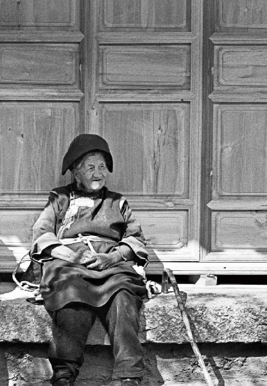
人一辈子，能够尽其天年，到最后无痛苦、很有尊严地死去，也未尝不是一件乐事。